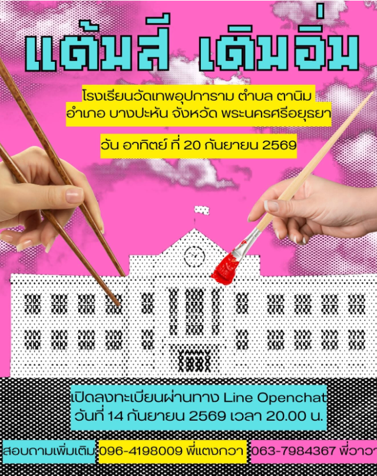
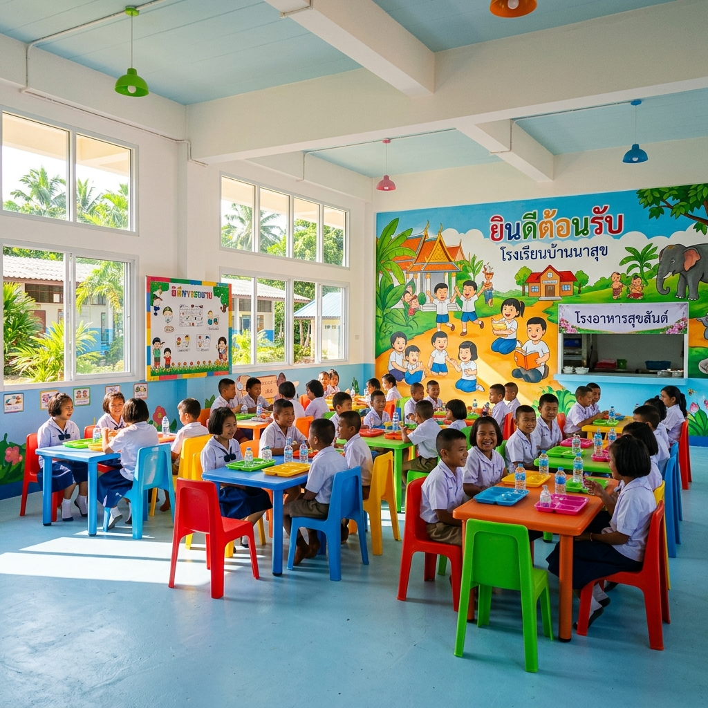
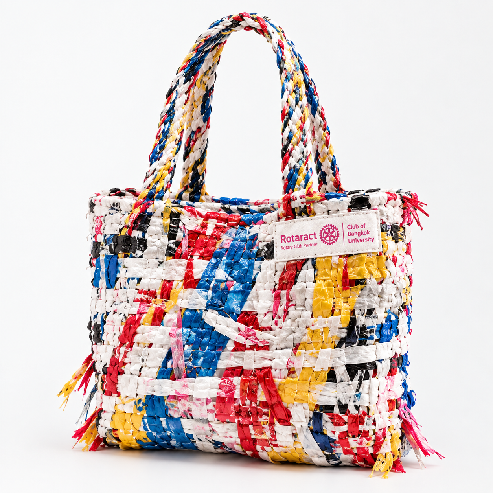
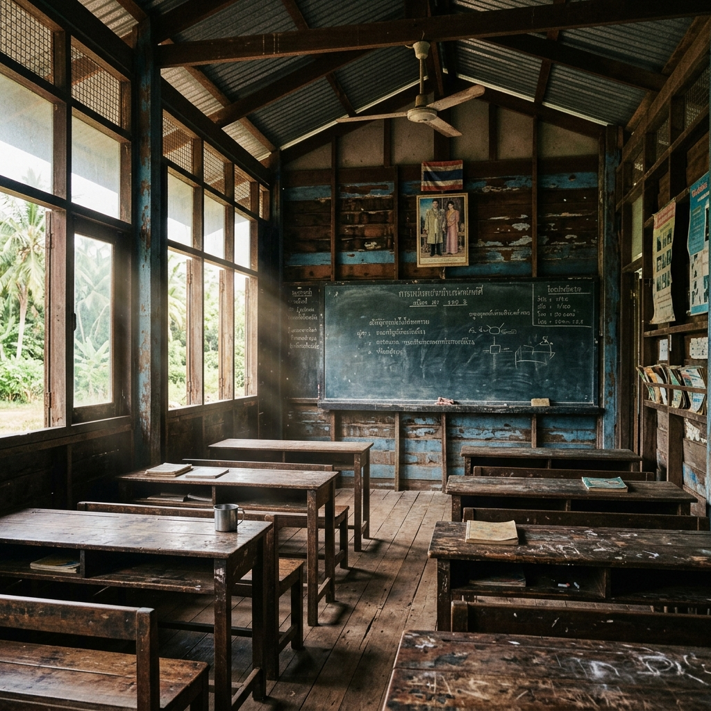
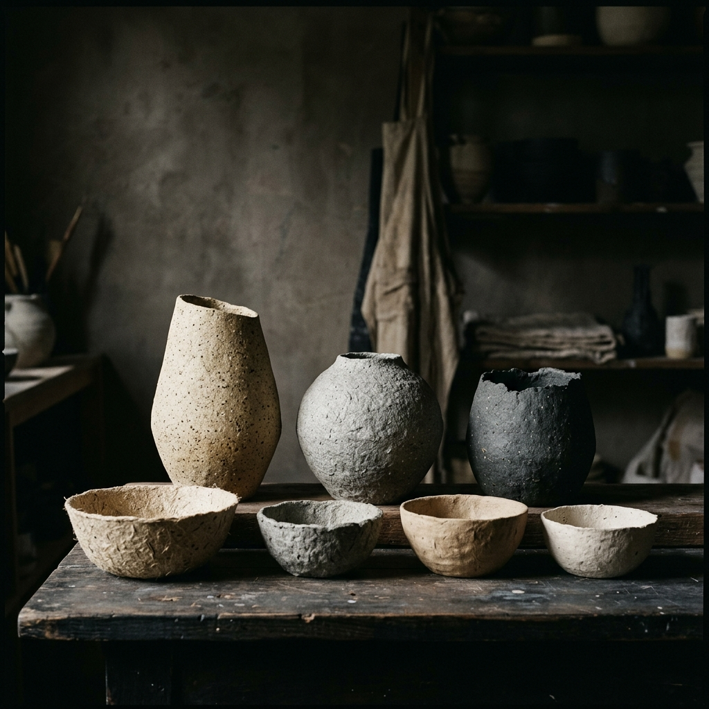
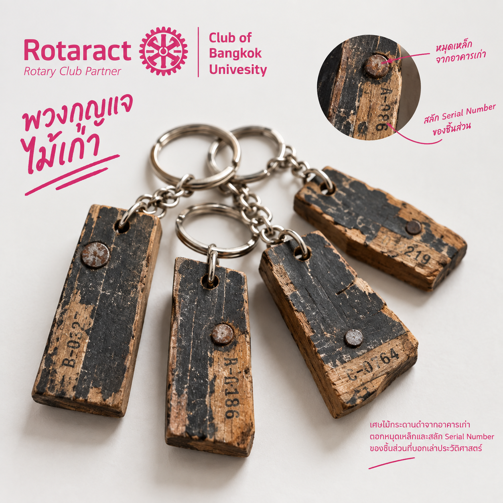

✦ เศษวัสดุเหลือใช้


จากเศษวัสดุค่าย 40 ➔ กลายเป็นโรงอาหารใหม่!
โรงเรียนบ้านน้ำตาก จ.เพชรบูรณ์ กำลังรอโรงอาหารใหม่ เราเอาเศษของจากค่ายเก่ามาทำของชำร่วยสุดเฟี้ยวให้ทุกคนได้สะสม
“การออกค่ายสำหรับเรา ไม่ได้เกิดขึ้นเพียงเพื่อเดินทางไปยังสถานที่หนึ่ง แล้วจบลงเมื่อถึงวันที่ต้องเดินทางกลับ... แต่เป็นจุดเริ่มต้นของการพัฒนาในสิ่งที่สามารถเดินหน้าต่อได้”

การลงพื้นที่คือโอกาสที่ทำให้เราได้รู้จักผู้คน เข้าใจบริบทของชุมชน และมองเห็นสิ่งที่พวกเขาต้องการอย่างแท้จริง เพื่อเป็นจุดเริ่มต้นของการพัฒนาที่เดินหน้าต่อได้

การพัฒนาที่ยั่งยืนไม่ได้หมายถึงการทำสิ่งที่ยิ่งใหญ่เพียงครั้งเดียว แต่มันคือการค่อยๆ สร้างสิ่งเล็กๆ นำเศษวัสดุที่เคยทำกลับมาพัฒนาและส่งต่อคุณค่าใหม่อีกครั้ง

ไม้กระดานดำห้อง ป.3 จากอาคารเก่า ตอกหมุดทองเหลืองและสลักรหัสเลเซอร์ ทุกชิ้นนำรายได้ 100% ไปสร้างโรงอาหารหลังใหม่ส่งมอบให้น้องๆ
จากค่ายหนึ่ง สู่ค่ายถัดไป จากคนกลุ่มหนึ่ง สู่คนอีกกลุ่ม การเดินทางครั้งนี้ไม่ใช่ปลายทาง แต่เป็นอีกหนึ่งก้าวของเรื่องราวที่กำลังเดินหน้าต่อไปเสมอ